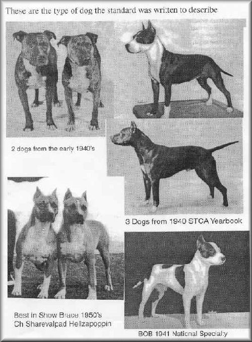
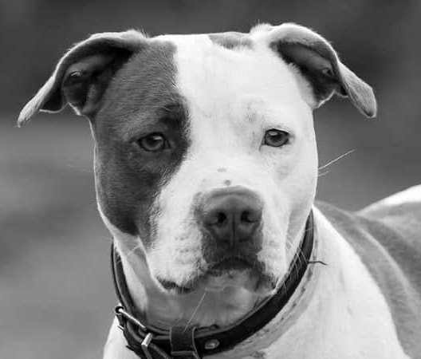

De Amerikaanse pitbullterriër is ontstaan in de 18e - 19e eeuw in Engeland, wanneer enkele liefhebbers een kruising wilden maken tussen de bulldog en de terriër om de kracht en lenigheid van de ene te combineren met de speelsheid van de andere. Het is pas later, toen migranten de honden meenamen naar de Verenigde Staten, dat dit ras Amerikaans werd.
Het ras werd gecreëerd met een duidelijk doel voor ogen; een ras dat makkelijk is op te voeden met het vermogen om het op te nemen tegen grotere dieren (stieren, beren, ...) in arena’s en putten. Hondengevechten waren in die tijd namelijk populair. En de naam is hiernaar een rechtstreekse verwijzing, want “pit” is het Engelse woord voor “put” en “bull” betekent “stier”.
Toen de hondengevechten verboden werden, werd het ras behouden dankzij de ADBA (American Dog Breeders Association), opgericht om gevechtshondenrassen te behouden als werkhond bij uitstek indien hij goed is opgevoed en sociaal is. De Amerikaanse pitbullterriër werd een ras dat extreem populair is in de Verenigde Staten, hond van de sterren, hond uit de films en vooral, militaire hond tijdens de Eerste Wereldoorlog. De geschiedenis heeft het over Stubby, een Pit Bull die meerdere soldaten gered heeft en een Duitse spion te pakken kreeg in 1917.
Later leek de Amerikaanse pitbullterriër wat in de vergetelheid te komen tot wanneer hij in de jaren ‘80 weer massaal opdook bij fokkers die het niet zo nauw namen en die genoten van een bloeiende handel. Dit heeft jammer genoeg het imago van de Pit Bull veranderd, want ze kozen dit ras om hun agressiviteit en dat vooral ten opzichte van de mens. De agressieve individuen en berichten uit de media over enkele incidenten, hebben het ras tot op de dag van vandaag in een ander daglicht geplaatst, dat van een gevaarlijk en agressief ras.
In Frankrijk is de aankoop en de voortplanting van het ras zelfs formeel verboden.
In België wordt het gekenmerkt als een gevaarlijk ras op alle communities. (Ter herinnering: wordt als gevaarlijk ras bepaald; een hond waarvan de beet grote schade kan aanrichten. Dit heeft echter niets te maken met het “kwaadaardige” karakter van de hond, n.v.d.r.)
Liefhebbers die op een verantwoorde manier omgaan met het ras, zullen u zeggen dat het een uiterst zachtaardig ras is voor mensen en soortgenoten als ze goed en liefdevol zijn opgevoed en als ze vanaf jonge leeftijd sociaal gemaakt zijn (zoals alle rassen). Het zou een prachtige werkhond en gezelschapshond zijn, lief voor kinderen. De American Temperament Test Society heeft het gedrag van 870 Pit Bulls bestudeerd, waarvan 755 geslaagd waren voor de test met een gemiddelde score van 86,8%. Om even een vergelijking te maken, scoorde de Chihuahua gemiddeld 69,8%. (bron:


Fysieke Kenmerken
De Amerikaanse pitbullterriër heeft zonder twijfel de fysiek van zijn voorouders: een massieve jachthond met sterke spieren in een gedrongen en lenig lichaam. Hij heeft een kleine staart, korte haren, een zeer grote snuit met scherpe tanden, de oren staan recht en de ogen zijn klein en mooi rond.
De vacht kan een variëteit aan kleuren zijn: zwart, wit, vaalrood, rood, bruin of anders.
Gevoeligheden en welzijn
De Amerikaanse pitbullterriër is onderhevig aan twee genetische aandoeningen, Daarom wordt aangeraden om de ouders hierop te onderzoeken. Vraag steeds een certificaat aan uw fokker voor deze twee ziektes: 1. Cerebellaire ataxie (NCL-A), dit is een beschadiging van het zenuwstelstel en 2. Hyperuricosurie (HUU), een verhoogd urinezuurgehalte.
Wees, zoals bij alle honden met een platte snuit, voorzichtig bij zeer warme temperaturen want hieraan zijn ze bijzonder gevoelig.